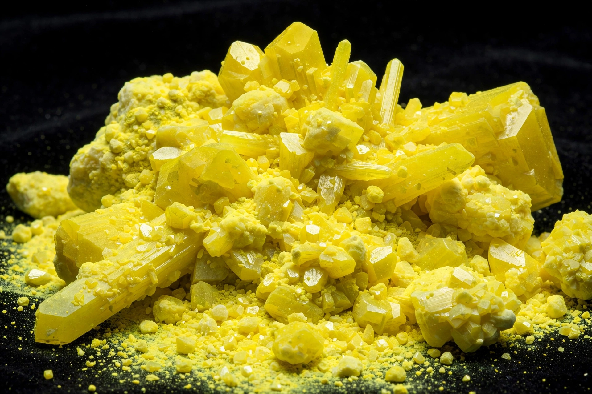

Sulfur
From Wikipedia, the free encyclopedia
Sulfur (sulphur in British spelling) is the chemical element with the symbol S and atomic number 16. It is a bright yellow nonmetal, known since antiquity as 'brimstone', found around volcanic vents and hot springs and produced in bulk from oil and gas refining.
Sulfur's most important compound is sulfuric acid, the largest-volume industrial chemical; sulfur is also used to vulcanise rubber, in fungicides, gunpowder and matches. It is an essential element in the amino acids cysteine and methionine.

Properties
At room temperature sulfur forms crown-shaped S₈ rings. It melts to a straw-yellow liquid that darkens and thickens dramatically as the rings break into chains, then thins again at higher temperatures. Burning sulfur gives off choking sulfur dioxide, the smell of struck matches.
History
Sulfur is one of the few elements known since prehistoric times, mentioned in the Bible as brimstone and used by the ancient Chinese in gunpowder. In 1777 Lavoisier recognised it as an element rather than a compound.
See also
Oxygen · Sulfuric acid · Periodic table · Chemical element